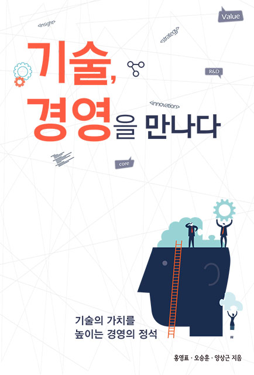

기술, 경영을 만나다.
Title: 기술, 경영을 만나다.
Author: 홍영표,오승훈,양상근
Content
기술의 연구개발부터 시작해 기술의 사업화와 수익 창출까지 이르는 기술혁신 의 과정 즉, 기술이 수익을 창출할 수 있도록 모든 활동을 경영하는 것에 대해 배
우며 여러 혁신의 방식을 배웠다. 생산, 제조에 중점을 둔 산업화시대에서 고부가가치산업을 중점으로 빠르게 변하는 시대에서 살아남는 혁신을 배웠다. 특히 코
닥이 자기잠식을 감수하고 더욱 성장할 수 있었던 기회를 놓친 사례는 우리가 파괴적 혁신이 얼마나 중요한 시대에 살고 있는지에 대해 상기시켰다. 위기 속에서
도 혁신의 길을 걷고자 하는 미래 경영인인 나에게 큰 도움이 된 것같다.
Memorable Phrase
"하지만 이렇게 간절하게 혁신을 찾지만 두 가지
근본적인 질문이 빠져 있는 경우를 본다. 하나는'왜'
혁신을 하는가이고, 다른 하나는'무엇'을
혁신하냐는 것이다. 먼저 혁신이 필요한 이유는
성장을 위해서이다."